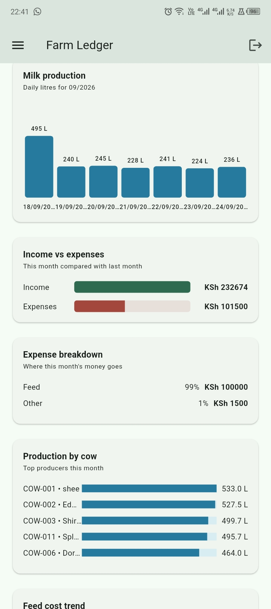
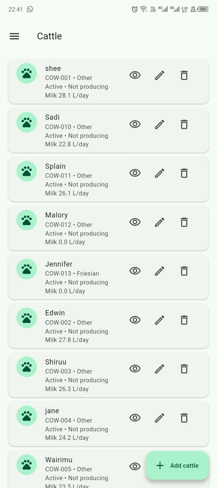
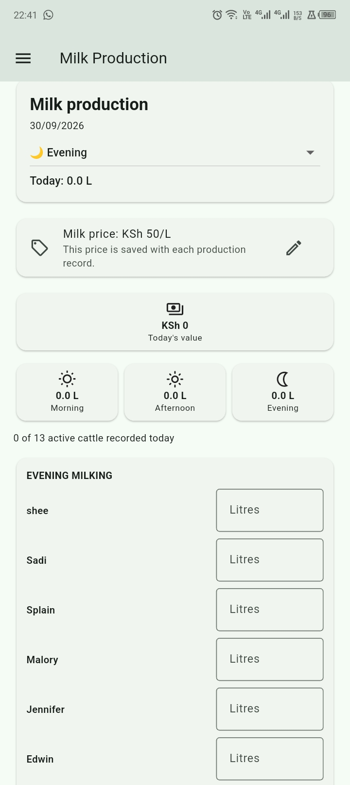
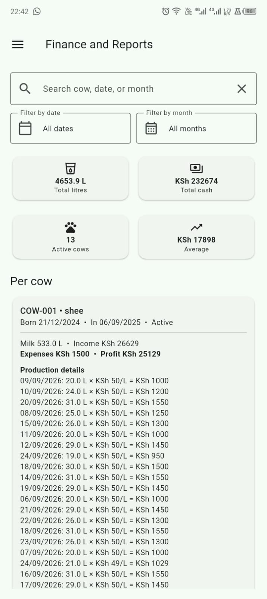

Cattle Management
Organizing livestock information and records within the application.
FEATURED PROJECT
A practical farm management application built to help organize and manage everyday farm operations.
OVERVIEW
Farm Ledger is a farm management application I am developing to make it easier to organize important farm information and day-to-day operations in one system.
The project is based on a real-world use case and is being developed with a focus on simplicity, practical workflows and useful information for farm management.
THE PROBLEM
I wanted to build software around a real problem rather than creating an application purely as a programming exercise.
Farm management involves keeping track of information such as livestock, production and expenses. Farm Ledger brings these areas together into a digital system.
THE APPLICATION
Farm Ledger brings livestock records, milk production, expenses and financial information into one practical system.

01 — DASHBOARD
The dashboard brings the most important farm information together in one place, including cattle, milk production, income, expenses and estimated profit.

02 — ANALYTICS
Farm Ledger presents production, income, expenses and performance information in a way that makes the data easier to understand.

03 — CATTLE
The cattle section provides a structured view of the livestock in the farm and their production information.

04 — MILK PRODUCTION
Milk production can be recorded by milking session, while the system keeps production information organized for the farm.

05 — FINANCE & REPORTS
Financial information can be viewed alongside production records, giving the system a broader view of farm performance.
SYSTEM AREAS
Organizing livestock information and records within the application.
Managing information related to milk production and farm output.
Providing a structured area for managing farm feeding information.
Organizing farm expenditure and financial information.
Bringing financial information into the wider farm management system.
Creating a foundation for understanding farm performance through useful information.
TECHNOLOGY
WHAT I'M LEARNING
Building Farm Ledger has given me experience working with application structure, UI development, data management and cloud services.
More importantly, it has taught me to think about software from the perspective of the person who will actually use it.
FUTURE DIRECTION
The project is intended to grow beyond basic record management into a broader farm management and analytics platform.
Future development includes deeper reporting, analytics, reminders and eventually intelligent features that can help turn farm data into useful insights.